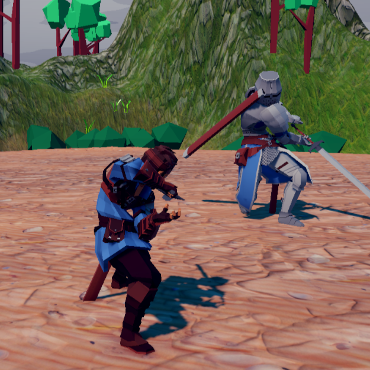
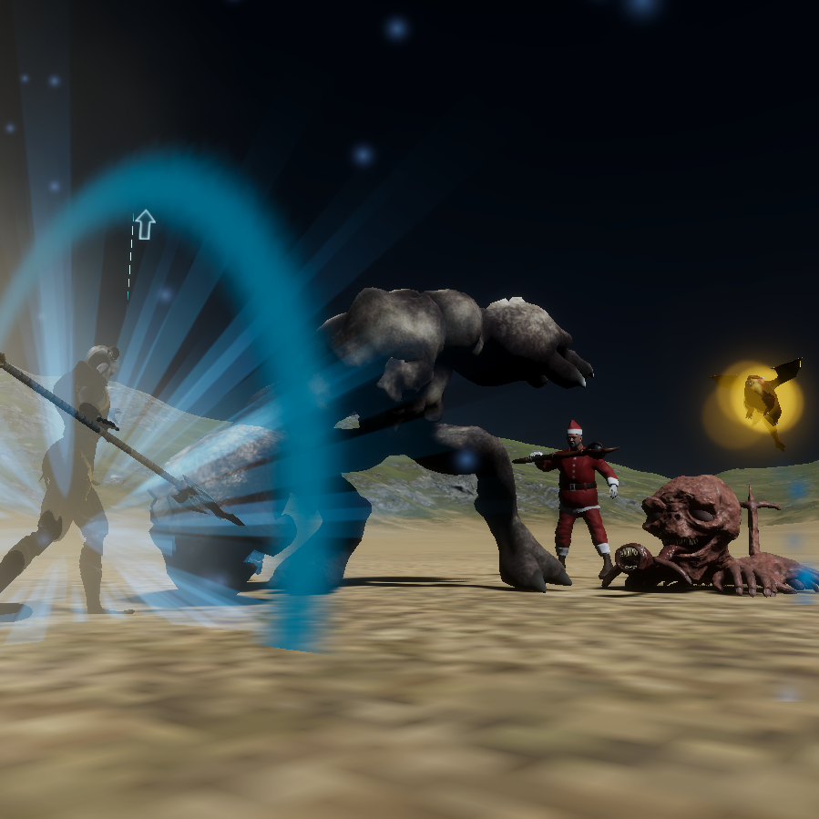

ゲーム作品一覧
Unity作品
シミュレーション / アドベンチャー
図書館警察シミュレーター
1~2時間遊べるシミュレーションゲーム。一時間以上飽きずに遊んでもらえるゲームを目指し、ボリュームと飽きさせないシステムに注力。

アクション / ソードアクション
5εκlЯ0
某SEK*ROのようなゲーム。操作性や演出、ゲームバランスにこだわった。
ホラー / アドベンチャー / 謎解き
ホラーゲーム
表現や演出にこだわったホラーゲーム。敵から隠れながら謎解きをして、閉ざされた建物からの脱出を目指す。
ストラテジー / 機械学習
機械学習ボードゲーム
プレイングをAIに学習させて、自分だけの「最強のCPU」を作るストラテジーゲーム。機械学習を１から実装した。
シミュレーション / 育成
盆栽シミュレーター
盆栽を育てるシミュレーションゲーム。枝や葉のメッシュを自由に生成・変形させるのが難しそうだと思って制作した。

アクション / タイピング
Winter Wars
サマーウォーズのように、忙しなくキーボードをたたくようなアクションゲーム。様々な技術を使って多彩な攻撃演出を実装した。
アクション / ソードアクション
サムライ対決
回避やカウンターを駆使して戦うアクションゲーム。アニメーションの編集など細かいテクニックを学んだ。諸事情で一週間で作った。
アクション / RPG
RPG
一般的なアクションゲーム。初めてUnityで制作したゲームでもある。Youtubeの動画を真似しながら進めた。
再現作品 / ミニゲーム
ブロックパズル
盆栽シミュレーターに実装したミニゲーム。落ちモノではない、一般的なブロックパズル。
再現作品 / ミニゲーム
スロット
盆栽シミュレーターに実装したミニゲーム。一般的な古典スロットに近い。
Eclipse(Java)作品
謎解き / RPG
猫の脱出
大学1回生で初めてチーム(一応)で作った作品。JavaのGUIを独学で学びながら開発。
再現作品 / パズル
テトリス
JavaのGUIでテトリスを再現した。ゲーム開発用ではない、限られた環境でも根気強く完成させた。
再現作品 / ボードゲーム
オセロ
JavaのCUIでオセロを再現した。人生で初めて作ったゲーム。CUIとオセロは相性が良く、簡単に実装できた。